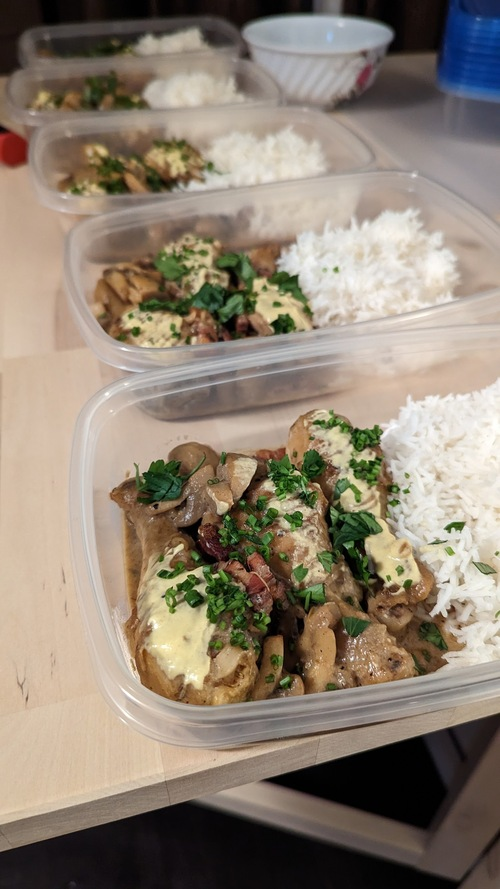

Chicken Fricassée

Serves: 4
Prep time: 1hr
Author: Matthieu Court
Ingredients
300g - Basmati Rice
700g - Chicken Thighs and Drumsticks (w/ skin)
1 handful - Pancetta or Lardons
1 tray - Mushrooms (chopped)
(Optional) 1 - Carrot (peeled, chopped)
1 cup - Chicken Stock
5 - Cloves of Garlic (minced or finely chopped)
1 bunch - fresh Thyme, Parsely
1 big glass - Dry White Whine
3 Tbsp - white flour
50g - Butter (unsalted)
Steps
Brown lardons, then mushrooms and reserve.
Brown chicken in butter.
Start the roux, and in goes the wine then reduce.
(Optional) Add the carrots.
Add the stock and simmer for 20 mins.
Shortly before the 20 mins, add the mushrooms and pancetta.
Spoon out everything but the liquid and reduce with the cream.
Back to Home